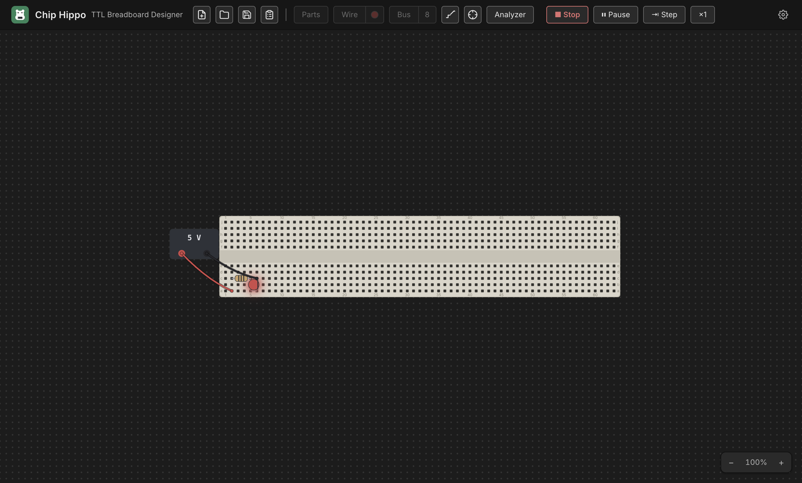

Running a Simulation
Once a circuit is wired up, Run hands it to the simulation engine, which traces power from every supply, resolves the electrical state of every net, and settles the circuit — LEDs light, chips report their health, and the probe and logic analyzer come alive. This page covers the transport (Run, Pause, Step, speed), what the signal levels mean, what triggers a re-settle, and what you can still interact with while the circuit runs.

Run & Stop
Press Run in the header toolbar — or the shortcut Space / Cmd+R
(Ctrl+R on Windows/Linux) — to start the simulation. The button becomes
Stop, editing locks (you can't move parts, place new ones, or lay wires
while running), and the engine cold-starts: it settles the circuit once from
scratch and begins driving live views from the result.
Press Stop (same shortcut) to freeze the simulation and return to editing. Stopping clears all run-volatile state — net levels, chip health badges, and any sequential state (counter values, shift-register contents, clock phase) reset. The only thing Stop doesn't discard is 12 V chip damage, which is written into the circuit itself and persists until you replace the damaged chip.
Space is disabled while a placement, wire, or bus tool is armed (it might
want the key for its own gesture) or while a text field has focus — use
Cmd/Ctrl+R in that case, or just click Run.
Signal levels: H, L, Z, X
Every point in the circuit — a hole, a pin, a wire — settles to one of four levels. The probe tool and the logic analyzer both speak this same vocabulary (see Probing & Net Names):
H— logic high, driven by a supply or a chip output.L— logic low, driven the same way.Z— floating: nothing is actively driving this point. Chip Hippo models real 74xx TTL behavior here — a floating input reads as HIGH, so an unconnected chip input doesn't just do nothing, it behaves as if tied high.X— a conflict: two drivers disagree on a net (two chip outputs fighting, or opposing supplies wired together), or the net never settled to a stable value at all (an oscillation — see below).
You don't need to know how the engine computes these to use the app, but
recognizing X on a probe reading is the fastest way to spot a wiring
mistake.
What re-settles the circuit
The circuit isn't a one-shot calculation — anything that could change what a net carries triggers a fresh settle while you're running:
- Clicking a switch or button.
- Turning a PSU on/off or changing its voltage.
- Changing a clock's rate or manual/free-running mode.
- A manual clock click, or (for sequential circuits) a Step advance.
Each re-settle starts from the previous stable state rather than from scratch — this warm start is what lets a cross-coupled latch or a counter hold its value across small changes instead of resetting every time you touch something.
The transport — Pause, Step & speed
For circuits with a clock source, the toolbar grows a small transport cluster next to Run the moment you start:
- Pause / Resume — freezes the free-running clock's edges without stopping the simulation; everything stays lit exactly as it was. Click again (the button relabels to Resume) to continue.
- Step — advances the circuit by exactly one clock half-period: every free-running clock flips once, and the circuit settles around it. Stepping implies Pause, so you can single-step a counter or shift register edge by edge and watch each bit change. A manually-toggled clock steps only on its own click, not on Step.
- Speed (
×¼/×1/×4) — click to cycle the free-running clock rate up or down. It scales every clock brick on the desk together, so a design with more than one clock keeps their relative timing.
See Power & Clock Sources for placing and configuring a clock brick, and Logic Analyzer & Timing for capturing what these edges actually do to your signals over time.
What lights up while running
Live views render entirely from the settled simulation state — nothing is computed by the views themselves:
- LEDs light when their anode net is
Hand their cathode net isL. Chip Hippo's LEDs are idealized (no series resistor required), but an LED driven directly between a strong supply and strong ground with nothing current-limiting it shows a distinct burnt cue instead of lighting normally — the app's way of telling you that connection would fry a real LED. - Chips show a small health badge the moment they're powered: normal chips show nothing extra, an underpowered chip (running at 3 V) gets an amber corner dot, and a chip killed by 12 V shows damaged — a red X with a smoke cue. Hover the badge for the exact reason (also unpowered or reversed VCC/GND). A damaged chip stays dead — including through Stop and a fresh Run — until you replace it from its right-click menu.
- Probe highlights tint whatever net you hover by its live level. Full detail on reading and naming nets lives in Probing & Net Names — this page won't duplicate it.
- Clock bricks carry a small pulse lamp that tracks their own current output level in real time.
Interacting live
Switches, push buttons, and clock bricks stay fully interactive while running — click a slide switch to flip it, hold a push button to press it, or click a manual clock to pulse it by hand. Each of these is exactly the kind of input event described above: it doesn't just update its own view, it triggers a fresh settle of the whole circuit, so downstream LEDs and chips react immediately.
Everything that edits the circuit's topology — placing, moving, or deleting a part, board, or wire — is locked out until you Stop. Part state (a switch position, a button press, a clock's phase) is not topology, so it stays live the whole time you're running.
Oscillations & conflicts
"The circuit settles" just means: the engine keeps re-evaluating every net and chip, feeding each result back in, until nothing changes anymore. Most circuits reach that fixed point in a handful of passes, faster than you can perceive.
Two things can go wrong:
- A conflict or short — two chip outputs disagreeing on the same net, or
opposing supplies tied together — settles immediately, but to
X, and the app raises a warning naming the net. - An oscillation — a circuit that never stops changing (an unbuffered
ring of inverters, for instance) can't reach a fixed point at all. Chip
Hippo detects this — after a bounded number of attempts it gives up,
marks the still-changing nets
X, and flags the oscillation rather than hanging.
Either way, the affected nets read X on the probe and in the logic
analyzer, which is your cue to go find the wiring mistake causing it.
Next: Power & Clock Sources for supply voltages, the 12 V damage rule, and clock bricks in depth, or Probing & Net Names to read exactly what's happening on any net.